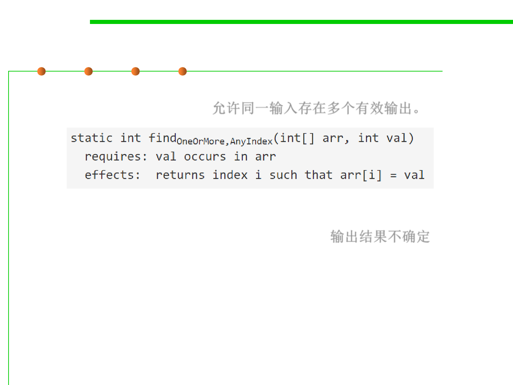

3.2 Designing Specification
Deterministic vs. underdetermined specs
▪ Under-deterministic(低确定的): specification allows multiple valid
outputs for the same input.允许同一输入存在多个有效输出。
▪ Nondeterministic(非确定的): sometimes behaves one way and
sometimes another, even if called in the same program with the same
inputs (e.g., depending on random or timing) 输出结果不确定